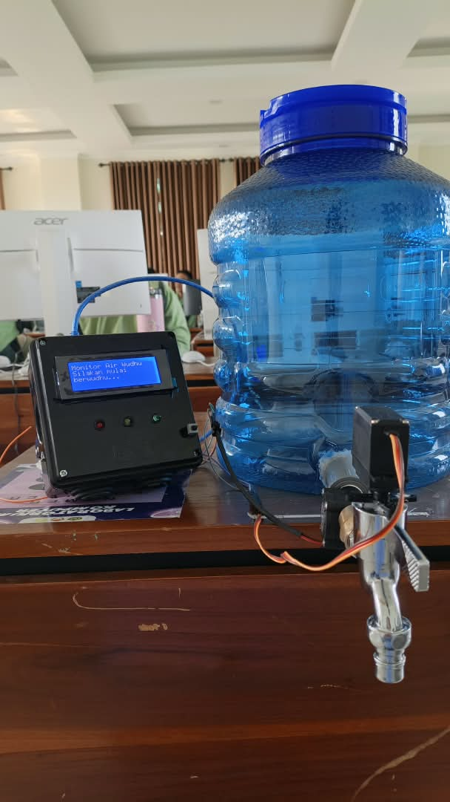

Pengembangan sistem sensor real-time untuk mencegah isrāf air praktik wudhu berbasis ekoteologi Islam.
Sistem siap · Tekan untuk membuka
BERANDA · 01
.
SEBUAH INTERVENSI KECIL UNTUK KEBIASAAN BESAR
Teknologi yang mengingatkan tanpa menghakimi.
ECO-WUDHU GUARD menghubungkan praktik ibadah, sensor aliran, dan pendidikan lingkungan dalam satu pengalaman yang sederhana.
98,12%akurasi sensor
0,92 srata-rata respons
100%fungsi berhasil
monitor_wudhu / liveLIVE
volume sesi1.024 mL
NORMAL · BATAS WAJAR
LCD 20×4 · YF-S201 · ARDUINO
✦
01 / KONTEKS PENELITIAN
Latar belakang, rumusan masalah, tujuan.
Air adalah kebutuhan utama kehidupan dan bagian dari praktik wudhu. Namun, nasihat hemat air belum selalu berubah menjadi umpan balik nyata saat keran digunakan.
01
Latar belakang
Islam melarang isrāf. Sensor membuat penggunaan air terlihat dan dapat ditanggapi secara langsung.
02
Rumusan masalah
Bagaimana sistem mendeteksi, mengklasifikasi, dan merespons penggunaan air saat wudhu?
03
Tujuan penelitian
Mengembangkan prototipe, menguji kinerja teknis, dan mengintegrasikan nilai ekoteologi Islam.
02 / METODOLOGI & ARAH
R&D yang terukur.
Penelitian Research & Development berfokus pada pengembangan dan pengujian prototipe pada simulasi keran wudhu.
VISIMenjadikan teknologi sebagai penghubung pengetahuan, ibadah, dan praktik hemat air.
MISIMengembangkan alat yang akurat, responsif, dan edukatif untuk menerjemahkan nilai isrāf, amanah, khalifah, dan mīzān menjadi tindakan nyata.

Tambahkan foto perangkat assets/device.png
01Siapkan & uji komponen
02Rangkai LED & buzzer
03Rangkai LCD I2C
04Rangkai sensor flow
05Rangkai servo & tombol reset
06Upload kode program
07Pasang sensor & servo
08Kalibrasi & pasang casing
Geser untuk melihat 8 langkah →
03 / HASIL PENELITIAN
Tiga warna, satu ajakan.
Sistem membaca total volume air lalu mengubah data menjadi umpan balik yang mudah dipahami.
1,88%rata-rata error
3–6 mLrentang konsistensi
HEMAT
< 800 mL
LED hijau · pesan hemat · tanpa buzzer
NORMAL
800–1.500 mL
LED kuning · buzzer singkat · servo membatasi bukaan
BOROS
> 1.500 mL
LED merah · buzzer berulang · servo tetap pada posisi pembatas
04 / BLUEPRINT
Dari aliran menjadi kesadaran.
Rangkaian sistem dirancang agar data, klasifikasi, dan respons bertemu dalam satu loop yang mudah diuji.
input proses respons
⌁YF-S201sensor flow
→
◉Arduinohitung volume
→
◌LCD / LEDfeedback
→
↻Buzzer / Servorespons
05 / KODE & CATATAN
Logika kecil, dampak nyata.
Sketsa Arduino lengkap dari dokumen teknis, dengan scroll internal agar setiap baris tetap dapat dibaca dalam frame presentasi.
Pin 2interrupt sensor
Pin 5servo keran
Pin 6buzzer piezo
Pin 8–10LED status
monitor_debit_air_wudhu.ino · lengkap
5. Kode Program (.ino)
/*
=========================================================
ALAT MONITOR DEBIT AIR WUDHU
=========================================================
Fungsi:
- Mengukur volume air (mL) yang keluar dari keran wudhu
- Menampilkan status HEMAT / NORMAL / BOROS di LCD 20x4
- LED hijau = hemat (senyap, tanpa bunyi, keran terbuka penuh)
- LED kuning = normal (batas wajar) -> buzzer bunyi PENDEK sekali,
servo otomatis menutup keran ~50% (air tetap mengalir,
hanya diperkecil, tidak mati total)
- LED merah = boros -> buzzer bunyi KERAS & SERING (3x beep
bernada tinggi tiap detik), keran tetap di posisi ~50%
- Total otomatis reset +-3 detik setelah air berhenti mengalir selama
5 detik (dianggap satu sesi wudhu selesai), keran kembali terbuka
penuh untuk pemakai berikutnya
PENTING soal LCD (modul I2C):
- LCD 20x4 di sini disambung lewat modul konverter I2C (chip PCF8574)
yang tertempel di LCD lewat pita kabel/header 16-pin. Dari modul I2C
itu hanya 4 kabel yang perlu ke Arduino: GND, VCC, SDA (->A4), SCL (->A5).
- Kalau backlight menyala tapi teks TIDAK muncul sama sekali: putar
trimpot biru kecil yang ada DI ATAS modul I2C (bukan di LCD-nya)
sampai karakter terlihat jelas — ini penyebab paling umum layar
tampak kosong.
- Kalau setelah diputar trimpot masih blank juga, alamat I2C mungkin
bukan 0x27. Jalankan sketsa "I2C Scanner" (File > Examples > Wire >
i2c_scanner) untuk memastikan alamatnya, lalu ganti di baris
LiquidCrystal_I2C lcd(0x27, 20, 4) di bawah kalau perlu (alternatif
umum lainnya: 0x3F).
Library yang dibutuhkan (install via Arduino IDE > Library Manager):
- LiquidCrystal_I2C (oleh Frank de Brabander)
- Servo (bawaan Arduino IDE, tidak perlu install manual)
Wiring ringkas:
- Sensor flow : merah->5V, hitam->GND, kuning(sinyal)->pin 2
- LCD I2C : VCC->5V, GND->GND, SDA->A4, SCL->A5
- LED hijau : pin 8 -> resistor 220ohm -> GND
- LED kuning : pin 9 -> resistor 220ohm -> GND
- LED merah : pin 10 -> resistor 220ohm -> GND
- Buzzer piezo : pin 6 -> GND (piezo pasif, dikendalikan lewat tone())
- Servo keran : sinyal->pin 5, VCC->5V (idealnya catu daya terpisah), GND->GND
- Tombol reset : pin 7 -> GND (pakai INPUT_PULLUP)
PENTING soal servo:
- Servo perlu dipasang mekanis (bracket/lengan) ke gagang keran agar bisa
memutarnya. SG90 cukup untuk keran ringan; kalau gagang keran keras/kaku,
pakai servo bertorsi besar seperti MG995/MG996R + catu daya 5-6V terpisah
(jangan ambil dari pin 5V Arduino, bisa membuat LCD/sensor tidak stabil).
- SUDUT_SETENGAH di bawah ini adalah nilai contoh (45 derajat). Sesuaikan
dengan hasil uji coba di keran Anda sampai bukaannya betul-betul ~50%.
- Servo memakai dua mode: saat AKTIF meregulasi air (status normal/boros)
servo tetap attach() dan MENAHAN posisi ~50% dengan tenaga penuh (perlu,
supaya tidak terdorong balik oleh tekanan air/pegas keran). Saat IDLE
(menunggu wudhu berikutnya, atau baru nyala) servo dibuka penuh lalu
di-detach() sehingga bisa diputar bebas pakai tangan — berguna waktu
memasang/mengarahkan bracket ke gagang keran.
Konsekuensinya: kalau servo digeser manual saat sedang bebas (idle),
posisi software tidak otomatis tahu itu berubah sampai ada perintah
baru yang beda dari posisi terakhir.
=========================================================
*/
#include
#include
#include
// Alamat I2C LCD umumnya 0x27, jika layar tetap blank setelah trimpot
// diputar, coba ganti ke 0x3F (cek dulu pakai sketsa I2C Scanner)
LiquidCrystal_I2C lcd(0x27, 20, 4);
Servo servoKeran;
// ===== KONFIGURASI PIN =====
#define FLOW_SENSOR_PIN 2 // Harus pin interrupt (2 atau 3 di Arduino Uno)
#define LED_HIJAU 8
#define LED_KUNING 9
#define LED_MERAH 10
#define TOMBOL_RESET 7
#define BUZZER_PIN 6
#define SERVO_PIN 5
#define TOMBOL_TUTUP 3
// ===== SUDUT SERVO KERAN (derajat) — kalibrasi sesuai keran Anda =====
const int SUDUT_BUKA_PENUH = 0; // posisi keran terbuka penuh
const int SUDUT_SETENGAH = 26;
const int SUDUT_TUTUP = 90; // posisi keran tertutup ~50% (bukan angka baku,
// ===== KALIBRASI SENSOR =====
// Untuk sensor YF-S201: frekuensi(Hz) = 7.5 x debit(L/menit)
// Jika hasil pembacaan tidak akurat, sesuaikan angka ini lewat kalibrasi manual
// (alirkan air 1 liter penuh, bandingkan dengan angka di LCD, lalu koreksi)
float calibrationFactor = 7.5;
// ===== BATAS KATEGORI (dalam mL) — silakan disesuaikan =====
const unsigned long BATAS_HEMAT = 800; // < 750 mL => hemat
const unsigned long BATAS_NORMAL = 1500; // 750 - 1500 mL => normal
// sesuaikan lewat uji coba langsung di keran)
int sudutServoTerakhir = -1; // -1 = belum pernah diperintah, servo masih bebas
// > 1500 mL => boros
// ===== VARIABEL SENSOR =====
volatile unsigned long pulseCount = 0;
unsigned long totalMilliLitres = 0;
unsigned long oldTime = 0;
unsigned long lastPulseTime = 0;
bool sedangMengalir = false;
const unsigned long IDLE_TIMEOUT = 5000; // 5 detik tanpa aliran = wudhu dianggap selesai
void pulseCounter() {
pulseCount++;
}
void setup() {
Serial.begin(9600);
lcd.init();
lcd.backlight();
pinMode(LED_HIJAU, OUTPUT);
pinMode(LED_KUNING, OUTPUT);
pinMode(LED_MERAH, OUTPUT);
pinMode(TOMBOL_RESET, INPUT_PULLUP);
pinMode(FLOW_SENSOR_PIN, INPUT_PULLUP);
pinMode(BUZZER_PIN, OUTPUT);
noTone(BUZZER_PIN);
pinMode(TOMBOL_TUTUP, INPUT_PULLUP);
bebaskanServoSaatIdle(); // buka penuh, lalu detach (servo bebas diputar tangan saat idle)
attachInterrupt(digitalPinToInterrupt(FLOW_SENSOR_PIN), pulseCounter, FALLING);
tampilkanSiap();
oldTime = millis();
}
void loop() {
// Cek tombol reset manual
if (digitalRead(TOMBOL_TUTUP) == LOW) {
tutupKeranPenuh();
delay(300); // debounce sederhana
}
if (digitalRead(TOMBOL_RESET) == LOW) {
resetSesi();
delay(300); // debounce sederhana
}
// Hitung debit setiap 1 detik
if (millis() - oldTime >= 1000) {
detachInterrupt(digitalPinToInterrupt(FLOW_SENSOR_PIN));
unsigned long pulses = pulseCount;
pulseCount = 0;
float deltaDetik = (millis() - oldTime) / 1000.0;
oldTime = millis();
float flowRateLpm = (pulses / deltaDetik) / calibrationFactor; // Liter/menit
float mlIntervalIni = (flowRateLpm / 60.0) * 1000.0 * deltaDetik; // mL pada interval ini
if (pulses > 0) {
totalMilliLitres += (unsigned long) mlIntervalIni;
lastPulseTime = millis();
sedangMengalir = true;
Serial.print("[DEBIT] Total saat ini: ");
Serial.print(totalMilliLitres);
Serial.println(" mL");
tampilkanStatus();
} else if (sedangMengalir && (millis() - lastPulseTime > IDLE_TIMEOUT)) {
// Air sudah berhenti mengalir cukup lama -> sesi wudhu dianggap selesai
delay(3000); // biarkan hasil akhir terbaca dulu
resetSesi();
}
attachInterrupt(digitalPinToInterrupt(FLOW_SENSOR_PIN), pulseCounter, FALLING);
}
}
void tampilkanSiap() {
lcd.clear();
matikanSemuaLED();
noTone(BUZZER_PIN);
bebaskanServoSaatIdle();
lcd.setCursor(0, 0);
lcd.print("Monitor Air Wudhu");
lcd.setCursor(0, 1);
lcd.print("Silakan mulai");
lcd.setCursor(0, 2);
lcd.print("berwudhu...");
}
void tampilkanStatus() {
lcd.clear();
matikanSemuaLED();
noTone(BUZZER_PIN);
if (totalMilliLitres < BATAS_HEMAT) {
// ===== HEMAT (LED HIJAU, tanpa bunyi, keran tetap terbuka penuh) =====
lcd.setCursor(0, 0);
lcd.print("Terima kasih telah");
lcd.setCursor(0, 1);
lcd.print("menghemat air saat");
lcd.setCursor(0, 2);
lcd.print("berwudhu.");
digitalWrite(LED_HIJAU, HIGH);
} else if (totalMilliLitres < BATAS_NORMAL) {
// ===== NORMAL / BATAS WAJAR (LED KUNING + beep pendek + keran ditutup ~50%) =====
lcd.setCursor(0, 0);
lcd.print("Air saat berwudhu");
lcd.setCursor(0, 1);
lcd.print("normal (batas");
lcd.setCursor(0, 2);
lcd.print("wajar)");
digitalWrite(LED_KUNING, HIGH);
bunyikanNormal();
gerakkanServo(SUDUT_SETENGAH); // otomatis perkecil aliran, air tidak mati
servoKeran.detach();
} else {
// ===== BOROS (LED MERAH + beep keras & berulang) =====
// Keran dibiarkan tetap di posisi ~50% (sudah ditutup sejak status normal);
// peringatan tambahan cukup lewat LED merah + buzzer, bukan menutup lebih jauh
lcd.setCursor(0, 0);
lcd.print("Anda telah");
lcd.setCursor(0, 1);
lcd.print("melakukan pemborosan");
lcd.setCursor(0, 2);
lcd.print("saat berwudhu");
digitalWrite(LED_MERAH, HIGH);
bunyikanBoros();
servoKeran.detach();
}
lcd.setCursor(0, 3);
lcd.print("Total: ");
lcd.print(totalMilliLitres);
lcd.print(" mL");
}
void resetSesi() {
totalMilliLitres = 0;
pulseCount = 0;
sedangMengalir = false;
noTone(BUZZER_PIN);
tampilkanSiap(); // ini juga akan membuka penuh & melepas (detach) servo
}
// Beep pendek & lembut sekali tiap status "normal" diperbarui (non-blocking,
// tone() dengan parameter durasi otomatis berhenti sendiri di belakang layar)
void bunyikanNormal() {
tone(BUZZER_PIN, 1200, 150);
}
// Beep keras (nada lebih tinggi, dekat titik resonansi piezo sehingga
// terdengar lebih nyaring) dan berulang 3x tiap status "boros" diperbarui
void bunyikanBoros() {
for (int i = 0; i < 3; i++) {
tone(BUZZER_PIN, 2500);
delay(90);
noTone(BUZZER_PIN);
delay(70);
}
}
// Menggerakkan servo ke sudut target dan TETAP menahan posisi itu (attach
// aktif) selama servo sedang dipakai meregulasi air (status normal/boros).
// Kalau sudah di posisi yang sama, tidak melakukan apa-apa (hindari kedutan).
void gerakkanServo(int sudutTarget) {
if (sudutTarget == sudutServoTerakhir) return;
Serial.print("[SERVO] Bergerak ke sudut: ");
Serial.println(sudutTarget);
servoKeran.attach(SERVO_PIN);
servoKeran.write(sudutTarget);
delay(400); // beri waktu servo mencapai posisi; perbesar kalau servo besar/berat
sudutServoTerakhir = sudutTarget;
// Sengaja TIDAK detach di sini -> servo tetap menahan posisi selama aktif
// meregulasi air (butuh tenaga untuk melawan tekanan air/pegas keran).
}
// Dipakai HANYA saat idle (menunggu wudhu berikutnya / baru nyala): pastikan
// keran terbuka penuh, lalu baru dilepas (detach) supaya servo bisa diputar
// bebas pakai tangan untuk pasang/kalibrasi bracket ke gagang keran.
void bebaskanServoSaatIdle() {
gerakkanServo(SUDUT_TUTUP);
servoKeran.detach();
}
// Menutup keran penuh (90 derajat) saat tombol ditekan.
// Dibuat langsung (tidak lewat gerakkanServo) supaya servo pasti bergerak,
// walaupun posisi terakhir yang tercatat sudah sama dengan SUDUT_TUTUP.
void tutupKeranPenuh() {
Serial.println("[SERVO] Tombol tutup ditekan -> keran ditutup penuh");
servoKeran.attach(SERVO_PIN);
servoKeran.write(SUDUT_TUTUP); // 90 derajat
delay(400);
sudutServoTerakhir = SUDUT_TUTUP;
// Servo tetap attach supaya menahan keran tertutup rapat
}
void matikanSemuaLED() {
digitalWrite(LED_HIJAU, LOW);
digitalWrite(LED_KUNING, LOW);
digitalWrite(LED_MERAH, LOW);
}
06 / SIMULASI & KREDIT
Coba satu sesi. Lihat responsnya.
Tarik volume air, jalankan aliran, lalu lihat bagaimana indikator, bunyi, dan posisi servo berubah secara visual.
1.024 mL
•
•
NORMAL 1024 mL
NORMALLED kuning · buzzer singkat · servo 50%
Tambahkan pakhafid.png
Khafid KhamdanS.Pd
Tambahkan paferdi.png
FerdiansyahB.Ict
TIM PENELITI
Teknologi, ibadah, dan kepedulian.
Konsep dan prototipe penelitian MTsN 44 Jakarta Timur